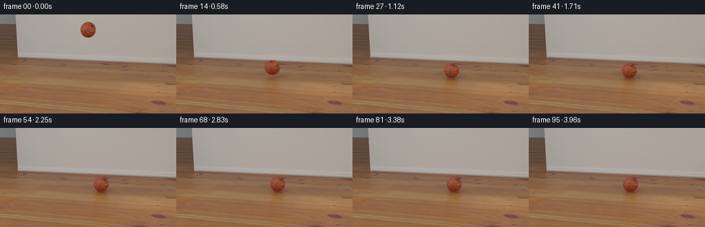
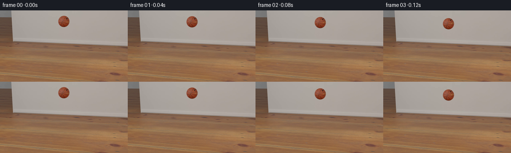
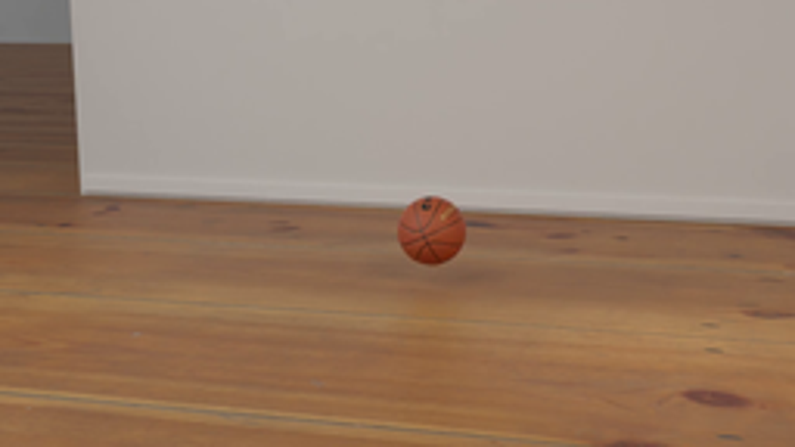
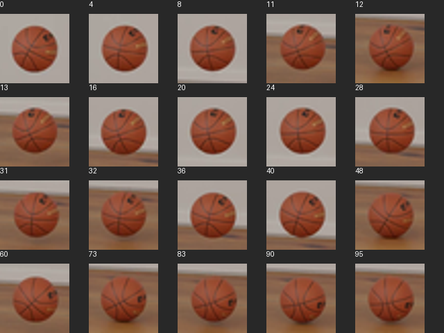
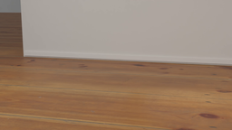
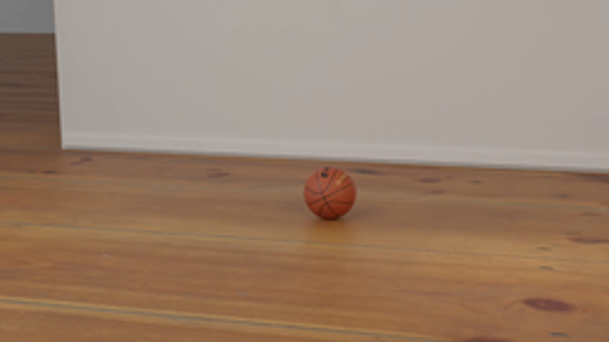
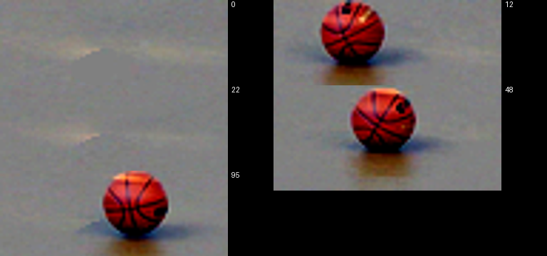
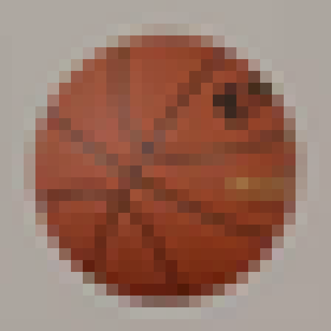
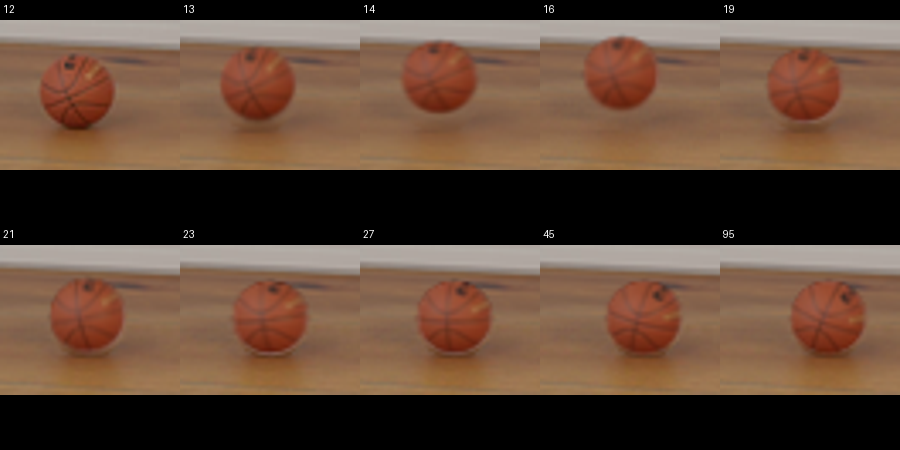
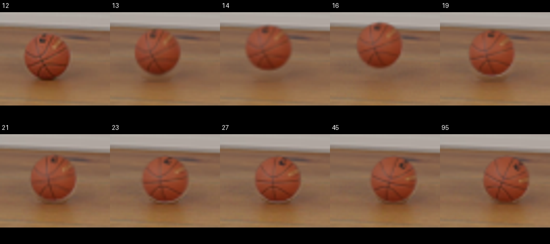

CODING AGENTS AS PIXEL WORLD MODELS
traex/GPT-6.1-Sol · pcve_0028
点击播放 · 原生 RGB 像素
编辑前的完整原视频
上方为编辑结果；原视频是模型获准使用的输入。下方为逐轮保存的编辑候选。
逐轮保存的候选
回放视频、检查图与代码变化。
每份候选均可单独播放。实际图片检查记录在下方工具轨迹中。
候选 01播放与检查图
点击播放 · 原生 RGB 像素

展开代码变化
--- 上一保存版本
+++ 本次保存版本
@@ -0,0 +1,184 @@
+"""Pixel-based restitution edit, using only the supplied source sequence."""
+from pathlib import Path
+import warnings
+import numpy as np
+import cv2
+from PIL import Image
+from scipy.optimize import curve_fit
+import artifact_io
+
+ROOT = Path(__file__).resolve().parent
+
+
+def track(frames):
+ yy, xx = np.indices(frames.shape[1:3])
+ result = []
+ for frame in frames:
+ rgb = frame.astype(float)
+ mask = ((rgb[..., 0] - rgb[..., 1] > 47)
+ & (rgb[..., 0] / np.maximum(rgb[..., 1], 1) > 1.65)
+ & (xx > 112) & (xx < 180) & (yy < 99))
+ _, labels, stats, _ = cv2.connectedComponentsWithStats(mask.astype(np.uint8))
+ k = 1 + stats[1:, 4].argmax()
+ contours, _ = cv2.findContours((labels == k).astype(np.uint8),
+ cv2.RETR_EXTERNAL, cv2.CHAIN_APPROX_NONE)
+ center, _, _ = cv2.fitEllipse(contours[0])
+ # The color threshold excludes the shaded rim, primarily on the right.
+ result.append((center[0] + .36, center[1] + .08))
+ return np.asarray(result)
+
+
+def clean_background(frames, centers):
+ yy, xx = np.indices(frames.shape[1:3])
+ stack = frames.astype(np.float32)
+ for i, (x, y) in enumerate(centers):
+ disk = (xx-x)**2 + (yy-y)**2 < 14**2
+ floor_effect = (abs(xx-x) < 33) & (yy > 76) & (yy < 113)
+ stack[i, disk | floor_effect] = np.nan
+ with warnings.catch_warnings():
+ warnings.simplefilter('ignore', RuntimeWarning)
+ background = np.nanmedian(stack, axis=0)
+ # At time zero the ball is well above these otherwise permanently occluded
+ # floor pixels, so the original first frame provides their clean appearance.
+ return np.where(np.isnan(background), frames[0], background).astype(np.float32)
+
+
+def sample(image, x, y):
+ return cv2.remap(image.astype(np.float32), x.astype(np.float32),
+ y.astype(np.float32), cv2.INTER_LINEAR,
+ borderMode=cv2.BORDER_REPLICATE)
+
+
+def build_textures(frames, centers, background):
+ gy, gx = np.indices((32, 32), dtype=np.float32)
+ dx, dy = gx - 15.5, gy - 15.5
+ # Fractional pixel coverage for the original ball silhouette.
+ alpha = np.zeros((32, 32), np.float32)
+ for sy in (np.arange(8) + .5) / 8 - .5:
+ for sx in (np.arange(8) + .5) / 8 - .5:
+ alpha += ((dx+sx)**2 + (dy+sy)**2 < 11.12**2) / 64
+ # A small optical reconstruction filter matches the downsampled source.
+ alpha = cv2.GaussianBlur(alpha, (3, 3), .32)
+ textures = []
+ for frame, (cx, cy) in zip(frames, centers):
+ patch = sample(frame, cx+dx, cy+dy)
+ bg = sample(background, cx+dx, cy+dy)
+ premultiplied = patch - (1-alpha[..., None])*bg
+ premultiplied = np.maximum(0, np.minimum(255*alpha[..., None], premultiplied))
+ textures.append(premultiplied)
+ return np.asarray(textures), alpha
+
+
+def shadow_layers(frames, centers, background, ground):
+ yy, xx = np.indices((144, 256), dtype=np.float32)
+ layers = []
+ for index in (48, 13):
+ cx, cy = centers[index]
+ difference = frames[index].astype(np.float32) - background
+ disk = (xx-cx)**2 + (yy-cy)**2 < 11.7**2
+ # Only the ball's floor shadow and subdued warm floor reflection move.
+ region = (abs(xx-cx) < 34) & (yy > 82) & (yy < 114)
+ difference *= region[..., None]
+ difference[disk] = 0
+ # Fill the occluded portion of the contact shadow beneath the ball.
+ contact = np.exp(-.5*((xx-cx)/8.5)**2
+ -.5*((yy-(ground+10.8))/2.0)**2)
+ replacement = -contact[..., None] * np.array([48., 49., 47.])
+ difference[disk & region] = replacement[disk & region]
+ layers.append((difference, cx))
+ return layers
+
+
+def motion(centers):
+ time = np.arange(96, dtype=float)
+ qfall = np.polyfit(time[:13], centers[:13, 1], 2)
+ qbounce = np.polyfit(time[13:32], centers[13:32, 1], 2)
+ roots = np.roots(qfall-qbounce)
+ first_impact = float(roots[np.argmin(abs(roots-12))])
+ ground = float(np.polyval(qfall, first_impact))
+ g = float(2*qbounce[0])
+ incoming = float(2*qfall[0]*first_impact + qfall[1])
+ restitution_original = -(2*qbounce[0]*first_impact + qbounce[1])/incoming
+ restitution = .4 * restitution_original
+ bounce_start, up = first_impact, restitution*incoming
+ hops = []
+ while up > .13:
+ duration = 2*up/g
+ hops.append((bounce_start, duration, up))
+ bounce_start += duration
+ up *= restitution
+ settled = bounce_start
+ vertical = np.empty(96)
+ for i, t in enumerate(time):
+ if t <= first_impact:
+ vertical[i] = np.polyval(qfall, t)
+ else:
+ vertical[i] = ground
+ for start, duration, velocity in hops:
+ if start <= t < start+duration:
+ tau = t-start
+ vertical[i] = ground-velocity*tau+.5*g*tau*tau
+ break
+ def horizontal_model(t, x, v, damping):
+ return x+v/damping*(1-np.exp(-damping*(t-first_impact)))
+ params, _ = curve_fit(horizontal_model, time[13:], centers[13:, 0],
+ p0=[138.3, .38, .012])
+ horizontal = centers[:, 0].copy()
+ x0, v0, damping = params
+ rolling_start = settled
+ xs = horizontal_model(rolling_start, *params)
+ vs = v0*np.exp(-damping*(rolling_start-first_impact))
+ # After the small hops die out, continuous floor contact dissipates the
+ # remaining rolling motion, instead of the source's intermittent contact.
+ rolling_damping = .060
+ for i, t in enumerate(time):
+ if first_impact < t <= rolling_start:
+ horizontal[i] = horizontal_model(t, *params)
+ elif t > rolling_start:
+ dt = min(t-rolling_start, 64.)
+ horizontal[i] = xs + vs/rolling_damping*(1-np.exp(-rolling_damping*dt))
+ print(f'impact={first_impact/24:.4f}s, original e={restitution_original:.4f}, '
+ f'edited e={restitution:.4f}, settling={settled/24:.4f}s')
+ return horizontal, vertical, ground, first_impact
+
+
+def main():
+ source = np.load(ROOT / 'source_pixels.npz')['rgb']
+ centers = track(source)
+ background = clean_background(source, centers)
+ textures, alpha = build_textures(source, centers, background)
+ xpos, ypos, ground, impact = motion(centers)
+ shadows = shadow_layers(source, centers, background, ground)
+ yy, xx = np.indices((144, 256), dtype=np.float32)
+ output = []
+ for i in range(96):
+ # The intervention changes the collision response, not the free fall.
+ if i <= impact:
+ output.append(source[i].copy())
+ continue
+ cx, cy = xpos[i], ypos[i]
+ height = ground-cy
+ blend = np.clip(height / (ground-centers[13, 1]), 0, 1)
+ image = background.copy()
+ for weight, (layer, original_x) in zip((1-blend, blend), shadows):
+ image += weight*sample(layer, xx-cx+original_x, yy)
+ # Sample the original sphere's changing seam/logo orientation by the
+ # traveled distance. Align both source textures before interpolation.
+ phase = np.interp(cx, np.maximum.accumulate(centers[:, 0]), np.arange(96))
+ lo = int(np.floor(phase)); hi = min(lo+1, 95); w = phase-lo
+ texture = textures[lo]*(1-w)+textures[hi]*w
+ mapx = (xx-cx+15.5).astype(np.float32)
+ mapy = (yy-cy+15.5).astype(np.float32)
+ placed_alpha = cv2.remap(alpha, mapx, mapy, cv2.INTER_LINEAR,
+ borderMode=cv2.BORDER_CONSTANT)
+ placed_texture = cv2.remap(texture, mapx, mapy, cv2.INTER_LINEAR,
+ borderMode=cv2.BORDER_CONSTANT)
+ image = image*(1-placed_alpha[..., None])+placed_texture
+ output.append(np.clip(np.rint(image), 0, 255).astype(np.uint8))
+ output = np.asarray(output, dtype=np.uint8)
+ artifact_io.save(output, ROOT)
+ Image.fromarray(background.astype(np.uint8)).save(ROOT / 'background_render.png')
+
+
+if __name__ == '__main__':
+ main()
候选 02播放与检查图
点击播放 · 原生 RGB 像素
展开代码变化
--- 上一保存版本
+++ 本次保存版本
@@ -50,23 +50,29 @@
def build_textures(frames, centers, background):
- gy, gx = np.indices((32, 32), dtype=np.float32)
- dx, dy = gx - 15.5, gy - 15.5
+ gy, gx = np.indices((160, 160), dtype=np.float32)
+ dx, dy = (gx - 79.5)/5, (gy - 79.5)/5
# Fractional pixel coverage for the original ball silhouette.
- alpha = np.zeros((32, 32), np.float32)
- for sy in (np.arange(8) + .5) / 8 - .5:
- for sx in (np.arange(8) + .5) / 8 - .5:
- alpha += ((dx+sx)**2 + (dy+sy)**2 < 11.12**2) / 64
+ alpha = np.zeros((160, 160), np.float32)
+ for sy in (np.arange(4) + .5) / 20 - .1:
+ for sx in (np.arange(4) + .5) / 20 - .1:
+ alpha += ((dx+sx)**2 + (dy+sy)**2 < 11.10**2) / 16
# A small optical reconstruction filter matches the downsampled source.
- alpha = cv2.GaussianBlur(alpha, (3, 3), .32)
+ alpha = cv2.GaussianBlur(alpha, (3, 3), .55)
textures = []
+ capture = cv2.VideoCapture(str(ROOT / 'source_video.mp4'))
for frame, (cx, cy) in zip(frames, centers):
- patch = sample(frame, cx+dx, cy+dy)
+ ok, high = capture.read()
+ if not ok:
+ raise RuntimeError('Source video decode failed')
+ high = cv2.cvtColor(high, cv2.COLOR_BGR2RGB)
+ patch = sample(high, (cx+dx+.5)*5-.5, (cy+dy+.5)*5-.5)
bg = sample(background, cx+dx, cy+dy)
premultiplied = patch - (1-alpha[..., None])*bg
premultiplied = np.maximum(0, np.minimum(255*alpha[..., None], premultiplied))
- textures.append(premultiplied)
- return np.asarray(textures), alpha
+ textures.append(cv2.resize(premultiplied, (32, 32), interpolation=cv2.INTER_AREA))
+ capture.release()
+ return np.asarray(textures), cv2.resize(alpha, (32, 32), interpolation=cv2.INTER_AREA)
def shadow_layers(frames, centers, background, ground):
候选 03播放与检查图
点击播放 · 原生 RGB 像素

展开代码变化
代码未变化；重新保存了产物。
候选 04播放与检查图
点击播放 · 原生 RGB 像素


展开代码变化
--- 上一保存版本
+++ 本次保存版本
@@ -183,6 +183,12 @@
output.append(np.clip(np.rint(image), 0, 255).astype(np.uint8))
output = np.asarray(output, dtype=np.uint8)
artifact_io.save(output, ROOT)
+ writer = cv2.VideoWriter(str(ROOT / 'edited_video.mp4'),
+ cv2.VideoWriter_fourcc(*'mp4v'), 24, (256, 144))
+ if writer.isOpened():
+ for frame in output:
+ writer.write(cv2.cvtColor(frame, cv2.COLOR_RGB2BGR))
+ writer.release()
Image.fromarray(background.astype(np.uint8)).save(ROOT / 'background_render.png')
可观测工具轨迹
实际执行的命令与返回图片。
命令 1exit 0
/bin/bash -lc 'ls -la && cat prompt.txt && cat GENERATION_RULES.md'
命令 2exit 0
/bin/bash -lc 'cat source_info.json && cat task_spec.json && cat artifact_io.py'
命令 3exit 0
/bin/bash -lc "python - <<'PY'
import numpy as np
from PIL import Image
z=np.load('source_pixels.npz');print([(k,z[k].shape) for k in z.files])
f=z[z.files[0]]
if f.ndim"'!=4: raise Exception('"'shape')
# threshold distinguish red ball from wood
for i,im in enumerate(f):
r,g,b=im.astype(float).transpose(2,0,1)
mask=(r>g*1.35)&(g>b*1.13)&(r-g>24)&(np.indices(r.shape)[0]<105)
yy,xx=np.where(mask)
print(i,round(xx.mean(),2),round(yy.mean(),2),xx.min(),xx.max(),yy.min(),yy.max())
Image.fromarray(np.median(f,axis=0).astype('uint8')).save('background_initial.png')
Image.fromarray(f[13]).resize((1024,576)).save('source_zoom.png')
PY"命令 4exit 0
/bin/bash -lc "python - <<'PY'
import numpy as np,cv2
f=np.load('source_pixels.npz')['rgb']
for i,im in enumerate(f):
r,g,b=im.astype(float).transpose(2,0,1)
Y,X=np.indices(r.shape)
mask=(r-g>47)&(r/g.clip(1)>1.65)&(X>112)&(X<180)&(Y<99)
n,lab,stats,cents=cv2.connectedComponentsWithStats(mask.astype('uint8'))
k=1+stats[1:,4].argmax();x,y,w,h,a=stats[k];cx,cy=cents[k]
print(f'{i:2} {cx:7.3f} {cy:7.3f} bbox {x} {y} {w} {h} a{a}')
PY"命令 5exit 0
/bin/bash -lc "python - <<'PY'
import numpy as np
from PIL import Image,ImageDraw
f=np.load('source_pixels.npz')['rgb']; S=Image.new('RGB',(640,480),(40,40,40));d=ImageDraw.Draw(S)
for k,i in enumerate([0,4,8,11,12,13,16,20,24,28,31,32,36,40,48,60,73,83,90,95]):
im=f[i].astype(float);mask=(im[:,:,0]-im[:,:,1]>47)&(im[:,:,0]/im[:,:,1].clip(1)>1.65);mask[:,:112]=False;mask[:,180:]=False;mask[100:]=False
yy,xx=np.where(mask);cx=int(np.median(xx));cy=int(np.median(yy))
p=Image.fromarray(f[i]).crop((cx-17,cy-17,cx+17,cy+17)).resize((100,100))
x=k%5*128;y=k//5*120;S.paste(p,(x,y+20));d.text((x,y),str(i),fill='white')
S.save('crops.png')
PY"命令 6exit 0
/bin/bash -lc "python - <<'PY'
import numpy as np,cv2
from PIL import Image
f=np.load('source_pixels.npz')['rgb']
# ball bounding circles mask at each frame for BG
positions=[]
for im in f:
a=im.astype(float);mask=(a[:,:,0]-a[:,:,1]>47)&(a[:,:,0]/a[:,:,1].clip(1)>1.65)
mask[:,:112]=0;mask[:,180:]=0;mask[99:]=0
n,lab,stats,cen=cv2.connectedComponentsWithStats(mask.astype('uint8'));k=1+stats[1:,4].argmax()
x,y,w,h,area=stats[k];positions.append([x+(w-1)/2,y+(h-1)/2])
p=np.array(positions)
# more accurate ellipse fit to edge saturation pixels
for i in range(0,36): print(i,p[i])
# cleaned temporal median
Y,X=np.indices((144,256));stack=f.astype(float)
for i,(x,y) in enumerate(p):
ball=((X-x)**2+(Y-y)**2)<14**2
shadow=((X-x)**2/23**2+(Y-94)**2/8**2)<1
stack[i][ball|shadow]=np.nan
bg=np.nanmedian(stack,axis=0)
print('nan bg',np.isnan(bg).sum())
bg=np.where(np.isnan(bg),f[0],bg).astype('uint8');Image.fromarray(bg).save('background_clean.png')
# big ground crop
sheet=Image.new('RGB',(768,288))
for j,i in enumerate([0,8,12,13,22,95]):sheet.paste(Image.fromarray(f[i]).crop((100,60,196,96)).resize((384,144)),(j%2*384,j//2*96))
Image.fromarray(f[12]).resize((1024,576)).save('contact_zoom.png')
np.save('positions.npy',p)
PY"命令 7exit 0
/bin/bash -lc "python - <<'PY'
import cv2,numpy as np
f=np.load('source_pixels.npz')['rgb'];bg=cv2.imread('background_clean.png')[:,:,::-1]
Y,X=np.indices((144,256));ps=[]
for i,im in enumerate(f):
a=im.astype(float)
mask=(a[:,:,0]-a[:,:,1]>47)&(a[:,:,0]/a[:,:,1].clip(1)>1.65)&(X>112)&(X<180)&(Y<99)
n,lab,st,c=cv2.connectedComponentsWithStats(mask.astype('uint8'));k=1+st[1:,4].argmax();mask=(lab==k).astype('uint8')
co,_=cv2.findContours(mask,cv2.RETR_EXTERNAL,cv2.CHAIN_APPROX_NONE)
ellipse=cv2.fitEllipse(co[0]);ps.append(ellipse[0]);
print(i, 'c',np.round(ellipse[0],3),'r',np.round(ellipse[1],3))
ps=np.array(ps);np.save('tracked.npy',ps)
for start,end in [(0,12),(13,31),(33,48),(49,61),(63,73)]:
q=np.polyfit(np.arange(start,end+1),ps[start:end+1,1],2);print('fit',start,end,q,'accel',2*q[0],'apex',-q[1]/(2*q[0]),'height',np.polyval(q,-q[1]/(2*q[0])))
# fit first and bounce1 continuous height to ground
q0=np.polyfit(np.arange(13),ps[:13,1],2);q1=np.polyfit(np.arange(13,32),ps[13:32,1],2)
tc=np.roots(q0-q1);print('collision roots',tc)
for t in tc:print('y',np.polyval(q0,t),'e',-(2*q1[0]*t+q1[1])/(2*q0[0]*t+q0[1]))
PY"命令 8exit 0
/bin/bash -lc "python - <<'PY'
import cv2,numpy as np
from PIL import Image
f=np.load('source_pixels.npz')['rgb'];b=np.array(Image.open('background_clean.png'))
for i in [0,11,12,13,22,95]:
dif=np.linalg.norm(f[i].astype(float)-b.astype(float),axis=2)
m=(dif>35).astype('uint8');m[:,:110]=0;m[:,180:]=0;m[97:]=0
n,l,s,c=cv2.connectedComponentsWithStats(m);k=1+s[1:,4].argmax();co,_=cv2.findContours((l==k).astype('uint8'),cv2.RETR_EXTERNAL,cv2.CHAIN_APPROX_NONE)
print(i,cv2.fitEllipse(co[0]))
Image.fromarray(f[0][8:36,114:142]).resize((560,560),Image.Resampling.NEAREST).save('edge.png')
PY"命令 9exit 0
/bin/bash -lc "python - <<'PY'
import numpy as np
p=np.load('tracked.npy')
for s,e in [(0,12),(13,31),(33,48),(49,61),(63,73),(74,82),(83,90),(91,95)]:
q=np.polyfit(np.arange(s,e+1),p[s:e+1,0],1);print(s,e,q)
PY"命令 10exit 0
/bin/bash -lc "python - <<'PY'
import numpy as np
from PIL import Image,ImageDraw
f=np.load('source_pixels.npz')['rgb']; bg=np.array(Image.open('background_clean.png'))
S=Image.new('RGB',(768,360));d=ImageDraw.Draw(S)
for k,i in enumerate([0,12,22,48,95]):
diff=f[i].astype(float)-bg.astype(float)
a=np.clip(diff[70:107,111:191]*4+128,0,255).astype('uint8')
S.paste(Image.fromarray(a).resize((320,148)),(k%2*384,k//2*120));d.text((k%2*384+325,k//2*120),str(i),fill='white')
S.save('shadow_diffs.png')
Image.fromarray(bg).crop((100,65,195,105)).resize((760,320)).save('bg_zoom.png')
PY"命令 11exit 0
/bin/bash -lc "python - <<'PY'
import numpy as np
p=np.load('tracked.npy')
segments=[(0,12),(13,31),(33,48),(49,61),(63,73),(74,82),(83,89),(91,95)]
qs=[np.polyfit(np.arange(s,e+1),p[s:e+1,1],2) for s,e in segments]
for a,b in zip(qs[:-1],qs[1:]):
roots=np.roots(a-b); t=roots[np.argmin(abs(roots-25))] if len(roots)==2 else roots[0]
print(roots,[(float(t),float(np.polyval(a,t))) for t in roots if 0<t<100])
PY"命令 12exit 0
/bin/bash -lc "python - <<'PY'
import numpy as np
from PIL import Image
from scipy.optimize import curve_fit
p=np.load('tracked.npy');t=np.arange(13,96)
def ff(t,x,v,k):return x+v/k*(1-np.exp(-k*(t-12)))
a,_=curve_fit(ff,t,p[13:,0],p0=[138,.38,.012]);print('horizontal exponential',a)
f=np.load('source_pixels.npz')['rgb'];bg=np.array(Image.open('background_clean.png'))
for y in [86,89,91,93,95,97,99]:
print(y,[(x,np.round((f[48,y,x].astype(float)-bg[y,x]),1).tolist())for x in [132,138,145,149,153,159,165,170]])
PY"命令 13exit 1
/bin/bash -lc 'python generate.py'
命令 14exit 0
/bin/bash -lc 'python generate.py'
命令 15exit 0
/bin/bash -lc "python - <<'PY'
from PIL import Image,ImageDraw
import numpy as np
f=np.load('source_pixels.npz')['rgb'];S=Image.new('RGB',(900,450));d=ImageDraw.Draw(S)
for j,i in enumerate([12,13,14,16,19,21,23,27,45,95]):
im=Image.open(f'frames/{i:02d}.png'); im=im.crop((116,60,169,105)).resize((180,150))
x=j%5*180;y=j//5*225;S.paste(im,(x,y+20));d.text((x+3,y+3),str(i),fill='white')
S.save('edit_detail.png')
PY"命令 16exit 0
/bin/bash -lc "python - <<'PY'
import cv2,numpy as np
from PIL import Image
cap=cv2.VideoCapture('source_video.mp4')
for i in range(24):
ok,bgr=cap.read()
if i not in [0,12,13,21,23]:continue
a=bgr[:,:,::-1].astype(float); Y,X=np.indices(a.shape[:2]); m=(a[:,:,0]-a[:,:,1]>47)&(a[:,:,0]/a[:,:,1].clip(1)>1.65)&(X>560)&(X<900)&(Y<495)
n,l,st,c=cv2.connectedComponentsWithStats(m.astype('uint8'));k=1+st[1:,4].argmax();co,_=cv2.findContours((l==k).astype('uint8'),cv2.RETR_EXTERNAL,cv2.CHAIN_APPROX_NONE);e=cv2.fitEllipse(co[0]);print(i,e,'low',[(c+.5)/5-.5 for c in e[0]],np.array(e[1])/5)
if i==21:Image.fromarray(a.astype('uint8')).crop((655,160,775,280)).save('hi_ball.png')
PY"命令 17exit 0
/bin/bash -lc "python - <<'PY'
import cv2,numpy as np
from PIL import Image
import generate
f=np.load('source_pixels.npz')['rgb'];p=generate.track(f);bg=generate.clean_background(f,p);b=cv2.resize(bg,(1280,720),interpolation=cv2.INTER_CUBIC)
cap=cv2.VideoCapture('source_video.mp4')
for i in range(96):
ok,im=cap.read(); im=im[:,:,::-1].astype('float32');cx,cy=(p[i]+.5)*5-.5
if i not in [0,8,12,13,21,23,48,73,95]:continue
diff=np.linalg.norm(im-b,axis=2)
Y,X=np.indices(diff.shape);r=np.hypot(X-cx,Y-cy)
mask=((diff>35)&(r<65)).astype('uint8');n,l,s,c=cv2.connectedComponentsWithStats(mask);k=1+s[1:,4].argmax();co,_=cv2.findContours((l==k).astype('uint8'),cv2.RETR_EXTERNAL,cv2.CHAIN_APPROX_NONE)
pts=co[0][:,0,:];pts=pts[pts[:,1]<cy+10]
A=np.c_[2*pts[:,0],2*pts[:,1],np.ones(len(pts))]; d=(pts**2).sum(1);x,y,k=np.linalg.lstsq(A,d,rcond=None)[0];R=np.sqrt(k+x*x+y*y)
print(i,'initial',np.round([cx,cy],2),'fit',np.round([x,y,R],2),'low',np.round([(x+.5)/5-.5,(y+.5)/5-.5,R/5],3))
PY"命令 18exit 0
/bin/bash -lc 'mkdir -p candidate_01 && cp pixels.npz inspection.png index.html candidate_01/'
命令 19exit 0
/bin/bash -lc "python generate.py && python - <<'PY'
from PIL import Image,ImageDraw
S=Image.new('RGB',(900,400));d=ImageDraw.Draw(S)
for j,i in enumerate([12,13,14,16,19,21,23,27,45,95]):
im=Image.open(f'frames/{i:02d}.png').crop((116,60,169,105)).resize((180,153))
x=j%5*180;y=j//5*200;S.paste(im,(x,y+20));d.text((x+3,y+3),str(i),fill='white')
S.save('edit_detail.png')
PY"命令 20exit 1
/bin/bash -lc "which ffmpeg && ls -lh pixels.npz index.html inspection.png && python - <<'PY'
import numpy as np
from PIL import Image
z=np.load('pixels.npz')['pixels'];s=np.load('source_pixels.npz')['rgb']
rgb=np.stack([(z>>16)&255,(z>>8)&255,z&255],axis=-1).transpose(2,0,1,3).astype('uint8')
print('shape:',rgb.shape,'preserved initial fall:',np.array_equal(rgb[:13],s[:13]))
PY"命令 21exit 0
/bin/bash -lc "ls -lh pixels.npz index.html inspection.png && python - <<'PY'
import numpy as np
z=np.load('pixels.npz')['pixels'];s=np.load('source_pixels.npz')['rgb']
rgb=np.stack([(z>>16)&255,(z>>8)&255,z&255],axis=-1).transpose(2,0,1,3).astype('uint8')
print('shape:',rgb.shape,'preserved initial fall:',np.array_equal(rgb[:13],s[:13]))
PY"命令 22exit 0
/bin/bash -lc 'python generate.py && ls -lh edited_video.mp4'
视觉工具实际返回图片 1

视觉工具实际返回图片 2
视觉工具实际返回图片 3

视觉工具实际返回图片 4

视觉工具实际返回图片 5

视觉工具实际返回图片 6

视觉工具实际返回图片 7
视觉工具实际返回图片 8

视觉工具实际返回图片 9

视觉工具实际返回图片 10

视觉工具实际返回图片 11
视觉工具实际返回图片 12

保存候选 4 份；完成命令 22 次；可验证图片返回 12 张。原始 API 响应与完整日志保留在本地。